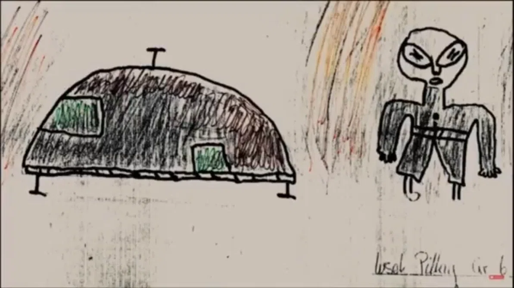

This archive documents a selection of the most significant and well-evidenced UAP incidents recorded worldwide. Each entry is presented with the primary source material available — including video reports, witness testimony, and government documentation — with our analysis added where relevant. Reports are added as new information becomes available.
Case Archive
2020s

▶
Hangzhou Airport Shutdown
Read more →
2010s

▶
UFOs and Nuclear Facilities
Read more →
2000s

▶
Robert Llimós Encounter
Read more →
1990s

▶
Varginha Incident
Read more →

▶
Ruwa Schoolchildren Encounter
Read more →

▶
Voronezh Landing
Read more →
1980s

▶
Rendlesham Forest
Read more →
1970s

▶
Colares Flap
Read more →
1960s

▶
Westall / Melbourne
Read more →

▶
George Van Tassel — KVOS Report
Read more →
Report a Sighting
If you have witnessed a UAP event or hold documentation relevant to any case in this archive, please contact us through our Report a UAP form. All reports are treated confidentially.